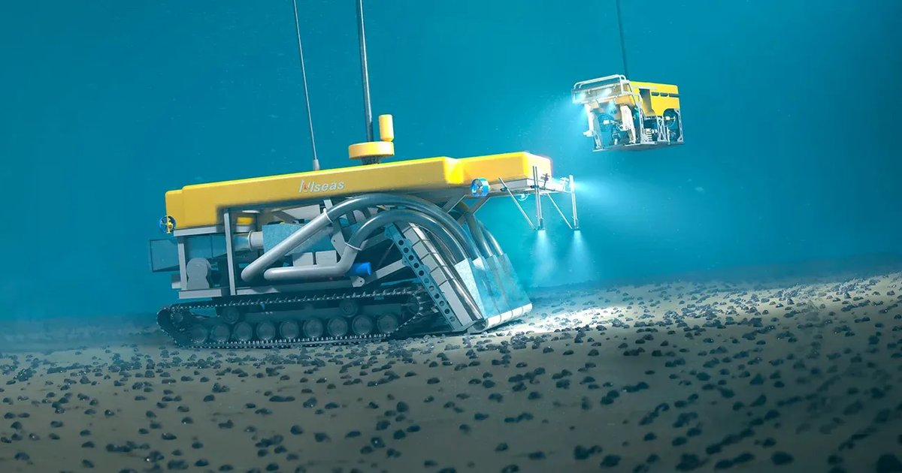
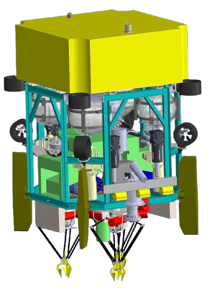

Hi, we are Metal Mech, the Gems International School's very own FIRST LEGO League (FLL) team! We are thrilled to combine our induvidual skills to tackle one of the global, growing threats; deep sea mining. It is a practice that poses significant risks to marine ecosystems and biodiversity. With companies increasingly eyeing the ocean floor for valuable polymetallic nodules, this emerging industry disrupts habitats. We chose this project because the health of our oceans is critical to the survival of all life on Earth. As a team passionate about sustainability and innovation, we wanted to create a solution that balances the need for critical minerals with the preservation of marine ecosystems. By addressing this challenge, we hope to inspire others to think critically about the impact of human activities and adopt more environmentally friendly practices. Thank you for your support!

What is Deep-Sea Mining?
Deep sea mining is the process of extracting valuable minerals from the ocean floor, particularly from polymetallic nodules and these nodules are found in areas like the Clarion-Clipperton Zone.
The global demand for these critical minerals is growing rapidly, driven by the rise of technologies such as electric vehicles and renewable energy systems. The demand for minerals like lithium and cobalt could rise by over 400% by 2040 and this can not be provided by terrestrial mining.
Deep sea mining offers a solution, as it could provide up to 27% of the world’s supply of cobalt and 10-20% of nickel, all while minimizing the ecological impact on land ecosystems.
The Problem
Deep sea mining may help meet the growing need for minerals, but it comes with serious problems. Dredging, the process used to collect polymetallic nodules from the ocean floor, can destroy fragile marine ecosystems. These ecosystems are home to many species, some of which we still don’t know about. The dredging stirs up sediments, which can smother marine life, block sunlight, and disrupt feeding patterns. It can also release harmful metals and chemicals into the water, polluting the ocean. Communities that rely on the ocean for food and jobs could face economic hardship if fisheries are damaged. Despite offering a potential solution for minerals, the risks to marine life and local communities make deep sea mining a dangerous choice.
Our Solution: Project Himaya

Solution Explaination
Project Himaya focuses on the selective harvesting of polymetallic nodules in deep-sea environments. The system uses an Autonomous Underwater Vehicle (AUV) equipped with
Precision "pick-and-place" technology to carefully extract individual nodules
Advanced imaging technology allowing the AUVs to detect and avoid nodules inhabited by marine life
Environmentally friendly design that includes safety features to withstand the deep sea pressure and avoid disrupting marine life.
Join Us for a Better Future
Sign the petition to support sustainable solutions like Himaya and protect our oceans.